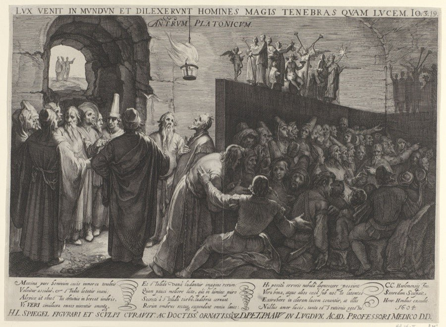

CH 1On Dialectic and Technē
Is knowing how to make something the same kind of knowing as knowing what is true?
The story
People have been chained in a cave since childhood, facing a blank wall, unable to turn their heads. Behind and above them a fire burns. Between the fire and their backs runs a low walkway with a screen along it, like the screen a puppeteer works behind. People walk that path carrying carved figures of humans and animals, held up above the screen.

The prisoners see the shadows those figures throw on the wall in front of them, and they hear the carriers' voices bounce back off the wall. They have never seen anything else. So they take the shadows for the things themselves, and when an echo arrives they assume the shadow is speaking.
The cave has a society. The prisoners give each other honours, praises and prizes for three skills: recognising a shadow fastest, remembering the order the shadows usually come in, and predicting which one comes next. They call that last one divining the future, and the best forecaster holds the most power.
One prisoner is freed, and every stage of it hurts.
- He is made to stand and turn toward the fire. His neck aches, the light dazzles him, and the carved figures look blurry and less real than the sharp shadows he knows. Told he is now nearer to real things, he does not believe it.
- He is dragged up a rough, steep slope into daylight, and outside he can see nothing at all at first.
- His eyes adapt in order: shadows on the ground, then reflections in water, then the objects themselves, then the night sky and the moon, and last of all the sun.
- Looking at the sun he works out that it governs the seasons and the year and is in some way the cause of everything he ever saw, the fire and the shadows included.
Now he understands the shadow game from outside, and understands it as a game. He pities the men still down there and says he would rather endure anything than go back to competing for their prizes. Plato has him quote Homer here. In the Odyssey, the ghost of Achilles tells Odysseus that he would rather be alive as a hired hand working for a landless man, the lowest position there was, than reign as king over all the dead. Plato borrows the line to say the freed man would accept any humiliation before going back to the prizes.
What the parts stand for
Plato spells the allegory out himself, so none of this is guesswork.
- The cave is the visible world, the ordinary one you walk around in.
- The firelight is the sun.
- The climb out is the mind rising to what Plato calls the intelligible realm, meaning the things you grasp by thinking and never by looking.
- The sun outside is what Plato calls the Form of the Good. He says it is the last thing to be seen and the hardest, and that it is the cause of everything correct and beautiful.
Which makes it an argument about education
Notice that the man's eyes worked the whole time, so nothing was added to him. What changed is the direction he was facing.
So Plato concludes that education cannot be putting knowledge into a mind that lacks it, the way you might put sight into blind eyes. The power to learn is already in everybody. The problem is where it points, and since an eye cannot turn on its own, the whole body has to turn with it. Education is the craft of turning the whole soul around. That is why the story is full of pain and force: turning hurts, and nobody does it voluntarily.
What counts as knowing, and what counts as opinion
Two words carry the rest of the argument, and they are worth having in plain English.
- Becoming covers everything that changes: this horse, this just act, your body, today's weather. Things that come to be, alter and perish.
- Being covers what stays fixed: what a horse is, what justice is. Plato calls these Forms.
His claim is that you cannot strictly know something that has already changed by the time you have hold of it. So beliefs about changing things are opinion, however true and however useful, and only thinking about the fixed things counts as knowledge.
He then splits each half again, which gives four rungs. This is Plato's ranking, and it is the thing the other eight authors in the packet are arguing with.
Why the crafts and mathematics fall short
A geometer proves his results correctly. He also helps himself to definitions and postulates he never examines, and if you ask what makes them true he has nothing to say. He is reasoning well from a foundation he has never looked at. That is why Plato says the mathematical sciences only dream about what is real.
The same goes for a craftsman. A shipwright builds a good ship and cannot tell you what "good" is. Plato's word for this practical, productive know-how is technē, and his complaint about it is precise: it works, and it cannot give an account of itself.
He is not dismissing it. He says the crafts and the mathematical studies are exactly what start the turn, because they pull the soul away from things it can touch. They are the hand on the arm. Dialectic is where the arm is going. That ranking is what every later author in the packet is arguing with.
A machine-learning system trained to spot skin cancer in photographs can outperform dermatologists and cannot say what it is keying on. When researchers looked, several such systems turned out to be partly reading the rulers and skin markings that clinicians place beside lesions they already suspect are malignant. The system had learned that a photograph containing a ruler is a photograph of cancer.
It knew that, with high accuracy, and it had no account of why. So it worked beautifully on the images it was trained on and failed on a photograph taken by a patient at home. That is Plato's objection to technē, reappearing in a hospital 2,400 years later, with the same consequence: a skill that cannot justify its own standards has no way to notice when the standards stop applying.
The return: laughter for one thing, killing for another
Plato imagines the man going back down, and describes two different reactions to two different acts. They are easy to run together and they are not the same.
If he comes back and talks, they laugh at him. His eyes are used to daylight, so in the dark he is worse at the shadow game than men who never left, and he loses to them. Plato says the prisoners would conclude that going up ruined his eyesight, and that the journey is not worth attempting. Plato also pictures him forced to argue in the law courts about what he calls the shadows of justice, against people who have never seen justice itself, where he performs badly and looks ridiculous.
If he tries to unchain them, they kill him. Plato's sentence is specifically about anyone who tried to free them and lead them upward, which is a different act from talking. Three things make it lethal. The cave's honours, and the power that comes with them, exist because the shadow game is treated as the real thing. A man unchaining people is dismantling the basis of everyone's standing, and above all the standing of whoever is currently winning. He is simultaneously, by their own measure, incompetent, since he cannot see. And he is taking away the one thing the prisoners have. Plato did not invent the reaction. Athens had executed his teacher Socrates about twenty years before he wrote this.
Why the city forces him to go back down
Here is the context that makes the question make sense. The cave appears in a book whose subject is the design of a just city, and at this moment in the conversation Socrates and Glaucon are inventing one from scratch. Glaucon objects that the philosopher would be happier left in the sunlight, so forcing him back down looks like an injustice done to him.
Socrates answers that it is not unjust, and gives two reasons. Both are answers to why compel him.
- The city made him, so the city may use him. In an ordinary city a philosopher appears by accident. The constitution did not plan him, pay for him or want him, so he owes it nothing and may keep out of public life with a clear conscience. In the city they are designing he was picked out as a child, educated at public expense and put through the entire ascent deliberately, for this purpose. What grows by itself owes nothing for its upbringing. What was cultivated does. Plato adds that the law was never trying to make any one group outstandingly happy: its job is to hold the city together, and that sometimes means using people.
- He is the only person who can safely be given power. Anyone who wants to rule wants it for what it gives him, and a city where rivals all want it tears itself apart in the fighting. The safe ruler is the one who would rather be doing something else. The man who has seen daylight is exactly that person, and he is also the only one who can tell a real image from a fake, which is the skill governing actually needs. So the city must have him, and since he does not want the job, it must compel him.
Which means the man who goes back into the cave is the philosopher-king. The return is not an epilogue to the story about enlightenment. It is a description of what governing feels like from the inside. You come back down to people who are better than you at a contest you now think is meaningless. You are laughed at, you lose that contest, and you are in some danger from the people you are trying to help. Plato's answer is that he has to do it anyway, and that a city run by anyone else is worse.
- Sets up
- The ranking Bacon inverts, and the assumption that knowledge is a matter of individual insight, which Bacon replaces with institutions and Foucault replaces with power.
- Echoed in
- Bacon's "Idols". Eidōlon is Greek for shadow or phantom. Bacon moves Plato's shadows from the wall to the inside of your skull.
- Inverted by
- Foucault. Plato says the man who sees clearly should govern. Foucault says the machinery of seeing people clearly is the machinery of governing them.
Who attacks the placement, and how
- Bacon turns it upside down. For him, being able to build the ship is the only proof that anybody understood anything. So the craftsman moves from the bottom of the ladder to the top, and the contemplative philosopher becomes the man who produced nothing in two thousand years.
- Comte keeps Plato's appetite for certainty and gives up on his subject matter. Asking what a thing really is, which is Plato's whole project, belongs for Comte to an earlier and outgrown stage of the human mind. What survives is the reliable statement of what follows what.
- The Vienna Circle go further and rule the question out. A sentence about what justice itself is, with no observation that could settle it, is not a hard question on their account. It is a sentence with no content, and Plato is the named example.
- Rousseau leaves the ladder alone entirely and asks a different question: whether any rung of it makes a person better. His answer is that a nation which gets good at the top rungs gets worse at being decent, so the ranking sorts the wrong thing.
- Lynn White asks where a ranking like that comes from. A culture that puts contemplation above making will build differently from one that treats work as worship, and he claims that difference is visible in what medieval Europe built and its neighbours did not.
- Foucault asks what a ranking does. Deciding which kind of knowing counts is also deciding whose knowing counts, and therefore who is fit to govern whom, which for him is what the whole apparatus was ever for.
If you keep one thingA shipwright knows that this hull shape works. Ask why that counts as a good ship and he says it sails well. Ask what makes sailing well good and he has nothing. The geometer one rung up is in the same position: he proves theorems correctly from axioms, and he cannot say what makes the axioms true. Plato's test for real knowledge is whether you can defend every step including the first one, and that is why he puts making and doing near the bottom. The rest of the packet attacks that placement.
There was no such place as Ancient Greece
There was no Greek country, government, army or capital. There were a few hundred independent city-states, poleis, each with its own laws, calendar, coins, dialect and gods, frequently at war with one another. Athens and Sparta spent twenty-seven years destroying each other in the Peloponnesian War, from 431 to 404 BCE, which Athens lost about five years before Plato was born into the losing side. A country called Greece appears in the 1830s. "Ancient Greek philosophy" is a label we invented for a shelf.
Plato never once tells you what he thinks
Everything he wrote is a dialogue: a script, with characters, jokes, interruptions and people losing their tempers. He never appears. In most of them the person doing the arguing is Socrates, and the Republic is narrated by Socrates in the first person. So the cave is not Plato explaining a theory. It is a character telling a story to a man called Glaucon, who happens to be Plato's own brother.
Socrates wrote nothing. Not a word.
Everything anyone knows about him comes from three other people:
- Plato, who idolised him.
- Xenophon, a soldier, who found him sensible and a little dull.
- Aristophanes, who put him in a comedy called The Clouds in 423 BCE, dangling in a basket and teaching young men to argue their way out of paying debts.
The three portraits do not match. Scholars call the resulting mess "the Socratic problem", and argue about how much of "Socrates" in the later dialogues is Plato using a beloved dead man as a puppet.
What "corrupting the young" actually meant
In 399 BCE, aged about seventy, Socrates was tried before a jury of 500 Athenian citizens on two formal charges. Impiety, meaning failing to recognise the gods the city recognised and introducing new divinities. And corrupting the young. Both were real offences, and both could carry death.
Corrupting the young meant teaching young men to cross-examine their elders and treat received wisdom as an open question. Socrates ran no school, charged no fees and taught no doctrine. What he did was stop people in public, ask them to define something they claimed to understand, and show that they could not. Most of his audience were young aristocrats, and he did this to their fathers in front of them.
Was the trial reasonable? Half of it was.
The case against him was real. Athens had just lost a twenty-seven-year war. In 404 the victorious Spartans installed an oligarchy, the Thirty, which killed something like 1,500 citizens in eight months before democracy was restored. Its leader was Critias, who had been in Socrates' circle. So had Charmides, another of the Thirty. So had Alcibiades, the brilliant general who changed sides to Sparta mid-war and then to Persia. Socrates was also openly contemptuous of the Athenian practice of choosing officials by lottery, and said you would never pick a ship's pilot or a doctor that way. To an Athenian juror in 399, this was a man who had taught a generation of rich young men to despise the city's institutions, and whose most famous students had betrayed the city and murdered its citizens.
The case for him is also real. He did not choose his students' politics, and holding a teacher responsible for what grown men do decades later is a stretch. He stayed in Athens under the Thirty and defied them: ordered to help arrest a man named Leon of Salamis, he simply went home, which could easily have killed him. He had earlier defied the democracy too, refusing to put an illegal mass trial of generals to a vote when he happened to be presiding. He obeyed neither regime.
And the charge was a substitute. When democracy came back in 403 an amnesty made it illegal to prosecute anyone for acts committed under the Thirty. Athens could not put Socrates on trial for his friends, so it put him on trial for impiety. Most historians read the trial as a political settling of accounts conducted through a religious charge, in a city traumatised by defeat and civil war.
The death sentence was partly his own doing. He was convicted by a modest margin, roughly 280 to 220. Athenian trials then had a second stage where each side proposed a penalty and the jury picked one. Exile was available and would probably have been accepted. Socrates proposed that the city give him free dinners for life, then offered a token fine which his friends raised to a serious one. The jury voted for death by a wider margin than it had voted to convict.
The prizes in the cave are real
They are in the text at 516c: honours, praises and prizes for the prisoner who was sharpest at identifying the shadows, best remembered the order they came in, and could therefore best divine the future. Plato invented the shadow-forecasting status contest, complete with power going to the best forecaster, and then said the man who has seen daylight would not want the prize.
Does Plato think people are born greedy? No, and he says so three lines earlier
The famous passage about leaden weights dragging the soul downward is at 519a, and the objection to it is answered just above it, on the same page of the PDF (p. 4). Three moves.
First, the other so-called virtues of the soul are not there beforehand but are added later by habit and practice. Character is installed. Second, the capacity for reason itself never loses its power, and is useful or harmful depending on the way it is turned. Third, and this is the striking one: look, he says, at people who are vicious but clever. Their sight is not inferior. It is keen, and it distinguishes sharply. It has been forced to serve bad ends, so the sharper it sees, the more harm it does.
That is one good instrument pointed in a bad direction, which matches the view that there is no inherent badness and that values get taught. Notice the grammar of the leaden weights too. They are things that have been fastened to the soul by feasting and greed. Attached.
The word behind "greed" in the Republic is usually pleonexia, wanting more than your share. Read it as a direction of attention. Appetite fixes you on things that can be consumed, things that can be consumed are things that change and perish, and attention spent on what perishes is attention unavailable for what does not. It is closer to mechanics than to scolding. Plato goes further elsewhere: nobody does wrong willingly, because wrongdoing is ignorance, and people chase what they take to be good while being mistaken about what is good.
The crack worth pointing at in class, because he is not consistent. The same book sorts citizens into classes by nature, with a founding myth about souls made of gold, silver and bronze. Later books divide the soul into parts, reason and spirit and appetite, that genuinely fight each other, which makes appetite something inside you and not a weight hung on you. So "installed or native?" is a live fault line running through the Republic, and naming it is worth more than agreeing with him. It is the same fault line the rest of the course prises open: how much of what looks like a person's nature is their situation.
"Plato" is a nickname, and possibly a joke about his shoulders
It means "broad". Ancient biographers, writing centuries later and not reliable, say a wrestling coach gave it to him for his build, or that it referred to his forehead or his prose style, and that his real name was Aristocles. Treat it as gossip, of the kind that survives 2,400 years.
He tried the philosopher-king thing for real, and it went badly
Plato made three trips to Syracuse in Sicily to turn its rulers into philosophers. The first ended, according to ancient sources, with him sold into slavery and ransomed by a friend who recognised him at a slave market. He went back twice more to tutor the young tyrant Dionysius II, was placed under house arrest, and eventually left having achieved the political education of a man who remained a tyrant.
Your university is named after a park
Around 387 BCE Plato founded a school in an olive grove outside Athens, sacred to a local hero named Akademos. The place was called the Academy, the school took the name of the place, and every academy, academic and academia since is named after a patch of trees belonging to a mythical Athenian. The school kept running under a long line of later heads until the emperor Justinian closed the philosophical schools in 529 CE, roughly nine hundred years.
The chapter the scan skips
The PDF jumps from anthology page 18 to page 25. Missing in between is chapter 2, Aristotle, who was Plato's student for twenty years and disagreed with him about almost everything. In particular he thought studying changeable, material, made things was perfectly respectable. His absence is why the packet seems to leap straight from Athens to the seventeenth century.